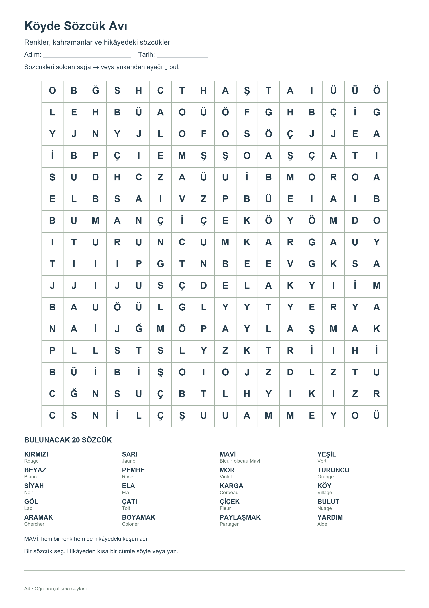

İlk ve son harfe dokun. Sözcükler yalnızca → sağa veya ↓ aşağı gider.
MAVİ hem bir renk hem de kuşun adı. Bulduğun bir sözcükle hikâyeden bir cümle söyle. İkililer en az altı sözcük bulsun; hızlı bitirenler tümünü arasın.
